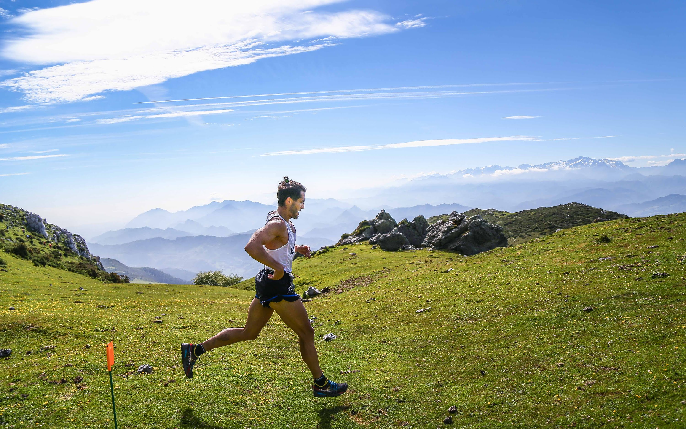
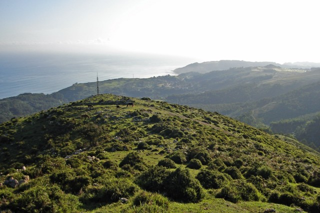

what we do
Run Asturias is a unique Austin-based adventure travel company that creates run-centric vacations in the north of Spain. Our itineraries are designed to combine unique, authentic travel experiences with organized, supported daily runs in an unforgettable location, and to accommodate all levels.
RUNNING IN SPAIN
We offer trips to the region of Asturias in the north of Spain, specifically the area of El Sueve. This location offers fantastic trails ranging from beginner to advanced levels that run along the coastline as well as through mountain forrests.
HOW IT WORKS
Our trips aim to focus on experiencing this magical area of Spain. We offer a home base format with amazing runs set up on different area trails each day. Through a method of route design and vehicle support, we are able to cater to all ability levels and enable participants to get up close and personal with the destination, resulting in experiences, connections and memories that last a lifetime.
Running is more than timing chips and finish lines and medals. Running is a journey, a way of connecting with ourselves and with the world. Come explore with us!
endurance adventure: picu pienzu
Endurance Adventure: Picu Pienzu is a half-day running adventure in which you will be pushed by mileage and inclines, challenged by terrain, and enchanted by a diversely beautiful country.
a jaunt: la forquita
A Jaunt: La Forquita is a short introduction run to climbing up hills. It's slow steady incline makes this a great run for those new to hill running. Beginning in late morning, you'll have time for a full breakfast before getting started.